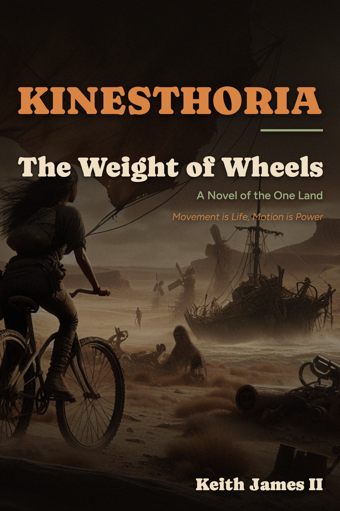

Book one
Kinesthoria
The Weight of Wheels
A Novel of the One Land
Movement is Life, Motion is Power

The fuel is gone.
The wheels are not.
A century after the drilling catastrophe called the Great Convergence folded the map of the world into one wounded landmass, the settlements of the One Land move on muscle, wind and hand-brazed steel. Veera hauls sacred oil across the Plain of Memories on a cargo bicycle eight times her weight, bred by the gene-readers for lung capacity and nothing else.
When raiders on razor stilts come out of the heat-shimmer, she turns her hauling machine into a war-horse, and a Stone-Walker chief names her for it. What he tells her next is worse than the raid: something is waking in the northern oil-fields, machines that walk but do not breathe, and the only people who can read the pattern are the ones nobody asked.
Kinesthoria is a story about inheritance that testing cannot measure, and about what a people keep when everything that made them powerful has been burned.
Movement is Life, Motion is Power. The One Land
Read a piece of it
Excerpt
An opening excerpt goes here.
Praise
Reviews and reader quotes as they come in.